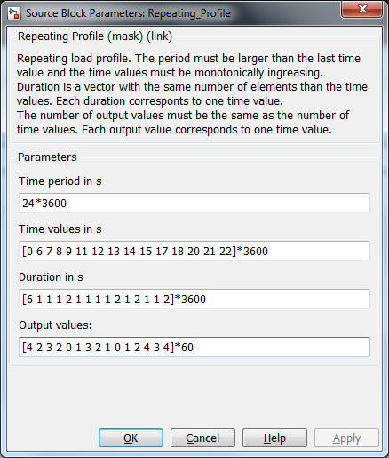

Repeating Profile
Path: CARNOT/Load/General
Purpose:
Create a repeating load profile keeping a constant values for a certain period.
Description:
Uses the pulse generator to create the profile. This generator creates a
sample time event for every change of the profile. So the the variable timestep
solver in Simulink hits the changes.
Duration is a vector with the values. Each duration corresponts to one time value. The number of output values must be the same as the number of time values. Each output value corresponds to one time value.
Output:
| Out | : | signal of the repeating profile |
Parameters and Dialog Box:

Conditions to be respected for the parameters:
Characteristics:
| Direct Feedthrough | : | No |
| Sample Time | : | Correspond to the time events |
| Vectorized | : | No |